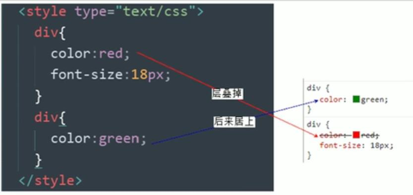

13 CSS的三大特性
CSS有三个非常重要的重要的特性：层叠性、继承性、优先级
13.1 层叠性
相同选择器给设置相同的样式，此时一个样式就会覆盖（层叠）另一个冲突的样式。层叠性主要解决样式突的问题
层叠性原则:
样式冲突，遵循的原则是就近原则，哪个样式离结构近，就执行哪个样式·
样式不冲突，不会层叠

图3.1: 层叠性
例子
<head>
<style>
div {
/* color=red被覆盖 */
color: red;
/* font-size没有被覆盖 */
font-size: 12px;
}
div {
color: pink;
}
</style>
</head>
<body>
<div>长江后浪推前浪，前浪死在沙滩上</div>
</body>13.2 继承性
CSS中的继承:子标签会继承父标签的某些样式，如文本颜色和字号。简单的理解就是∶子承父业。
恰当地使用继承可以简化代码，降低CSS样式的复杂性
子元素可以继承父元素文字相关的样式( text-, font-, line-这些元素开头的可以继承，以及color属性)
例子
<head>
<style>
div {
color: pink;
font-size: 14px;
}
</style>
</head>
<body>
<div>
子标签p 继承了父标签 div的样式
<p>龙生龙，凤生凤，老鼠生的孩子会打洞</p>
</div>
</body>13.2.1 行高的继承
语法
body {
font:12px/1.5 'Microsoft YaHei';
}行高可以跟单位也可以不跟单位
如果子元素没有设置行高，则会继承父元素的行高为1.5.此时子元素的行高是:当前子元素的文字大小*1.5
body行高1.5这样写法最大的优势就是里面子元素可以根据自己文字大小自动调整行高
例子
<head>
<style>
body {
color: pink;
/* font: 12px/24px 'Microsoft YaHei'; */
/* 1.5是当前文字大小的11.5倍 */
font: 12px/1.5 'Microsoft YaHei ';
}
div {
/* 行高继承父标签body的=1.5*16=24px */
font-size: 14px;
}
p {
/* 行高继承父标签body的=1.5*16=24px */
font-size: 16px;
}
/* li没有指定文字大小 则会继承父亲的body12px*1.5=18px */
</style>
</head>
<body>
<div>粉红色的回忆</div>
<p>粉红色的回忆</p>
<ul>
<li>我没有制定文字大小</li>
</ul>
</body>13.3 优先级
当同一个元素指定多个选择器，就会有优先级的产生。
选择器相同，则执行层叠性
选择器不同，则根据选择器权重执行
| 选择器 | 选择器权重 |
|---|---|
| 继承或通配符选择器 | 0,0,0,0 |
| 标签选择器 | 0,0,0,1 |
| 类选择器/伪类选择器 | 0,0,1,0 |
| ID选择器 | 0,1,0,0 |
| 行内样式 | 1,0,0,0 |
| !important | 无穷大 |
例子
<head>
<style>
/* !importan权重最高 */
div {
color: pink !important;
}
/* 类选择器权重更高，所以权重更高 */
.test {
color: red;
}
/* ID选择器权重更高 */
#demo {
color: green;
}
</style>
</head>
<body>
<div class="test" id="demo" style="color: purple;">你笑起来真好看</div>
</body>13.3.1 优先级注意
可以简单记忆法:通配符和继承权重为0,标签选择器为1,类(伪类)选择器为10, id选择器100,行内样式表为1000, !important无穷大.
继承的权重是0，如果该元素没有直接选中，不管父元素权重多高，子元素得到的权重都是0。
例子
<head>
<style>
/* id父亲的权重是100 */
#father {
color: red;
}
/* p的继承权重是100 自己标签选择器的权重是1*/
/* 所以以后我们看标签到底执行那个样式,就先看这个标签有么有直接被选出来 */
p {
color: pink;
}
body {
color: red;
}
/* a链接浏览器默认制定了样式 蓝色，下划线，相当于a {color:blue;} */
a {
color: green;
}
</style>
</head>
<body>
<div id="father">
<p>你还是很好看</p>
</div>
<a href="#">我是单独的样式</a>
</body>13.3.2 权重叠加
如果是复合选择器，则会有权重叠加，需要重新计算权重。
<head>
<meta charset="UTF-8">
<meta http-equiv="X-UA-Compatible" content="IE=edge">
<meta name="viewport" content="width=device-width, initial-scale=1.0">
<title>Document</title>
<style>
/* 两个都是标签选择器 */
/* li权重为0,0,0,1 */
li {
color: red;
}
/* 后代选择器 ui中li的权重=0,0,0,1+0,0,0,1=0,0,0,2*/
ul li {
color: green;
}
/* .nav li的权重=0,0,1,0+0,0,0,1=0,0,1,1 */
.nav li {
color: pink;
}
</style>
</head>
<body>
<ul class="nav">
<li>大猪蹄子</li>
<li>大肘子</li>
<li>猪尾巴</li>
</ul>
</body>小测试
div ul li ------> 0,0,0,3
.nav ul -------> 0,0,1,2
a:hover ----———> 0,0,1,1
.nav a -------> 0,0,1,113.4 综合练习
把第一个小li里面的文字颜色改为红色 并加粗
<head>
<style>
.nav li {
color: red;
}
</style>
</head>
<body>
<ul class="nav">
<li>人生四大悲</li>
<li>家里没宽带</li>
<li>网速不够快</li>
<li>手机没流量</li>
<li>学校没wifi</li>
</ul>
</body>解
<head>
<style>
/* 权重是11 */
.nav li {
color: red;
}
/* 权重的20 */
.nav .pink {
color: pink;
font-weight: 700;
}
</style>
</head>
<body>
<ul class="nav">
<li class="pink">人生四大悲</li>
<li>家里没宽带</li>
<li>网速不够快</li>
<li>手机没流量</li>
<li>学校没wifi</li>
</ul>
</body>